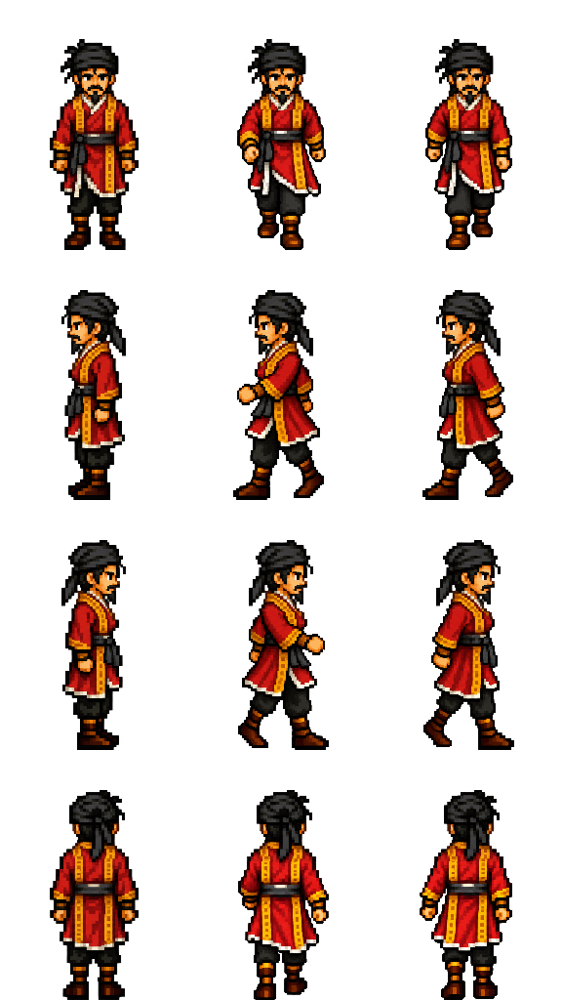

Song Jiang · Classic consistency
The approved original stays beside the revised walk at the same scale. The original cap, face and beard are retained across every frame; the original standing view is the walk's neutral frame.
Compare on game backgrounds · Assets and generation prompts
Approved Classic originalRevised walk · original proportionsPrevious walk · for comparison
Revised frames retain twice the width and height of the previous export. Both versions occupy the same world size. Raw source strips and a source-scale master are preserved; colours are not palette-reduced.
Revised walking sheet

Detailed walking PNG · Source-scale master · Compact 96×128 export